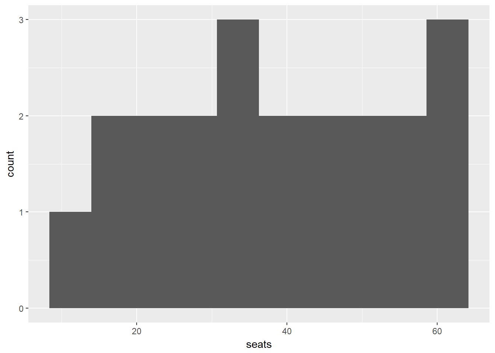
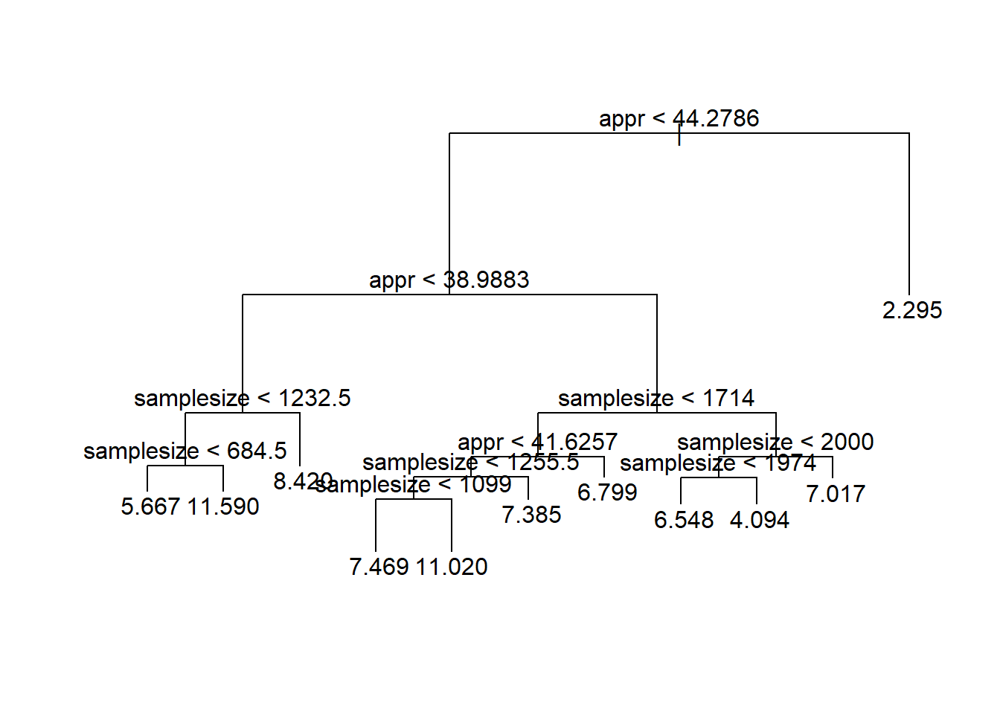
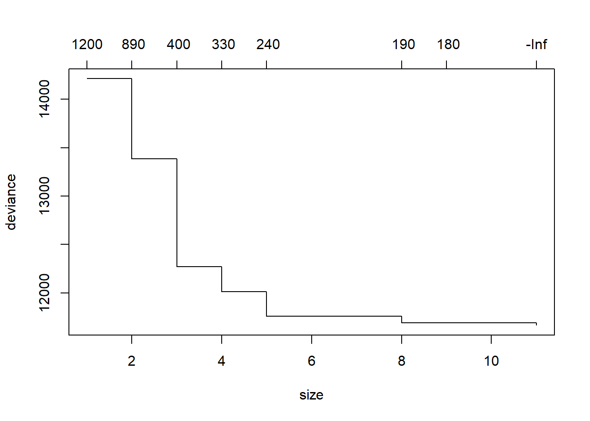
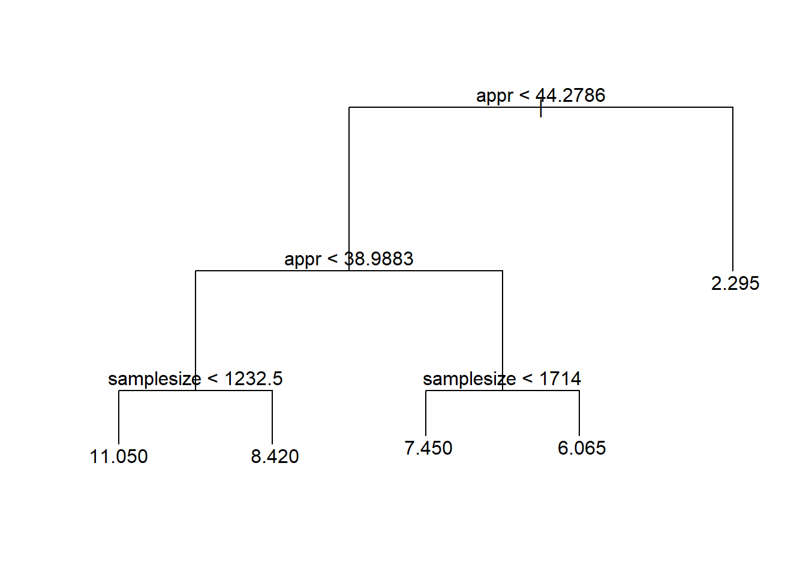
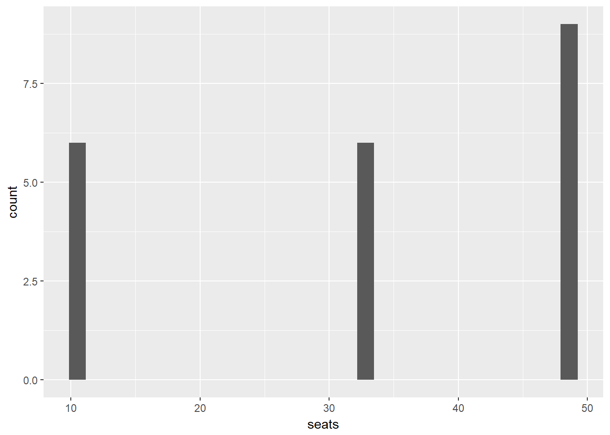

Here is a look at the data. This data created from two data sets from 538. Appr is the presidents approval rating, samplesize is the sample size of each poll, enddate is when the poll was finished, and dem and rep are what percent of people want to vote for each party. I’ve made the demwin variable since I want to see the chance that the democrats would have a majority. This variable was just dem - rep to see the difference in support.
| appr | samplesize | enddate | dem | rep | demwin |
|---|---|---|---|---|---|
| 47.04 | 1043 | 2017-01-24 | 48 | 40 | 8 |
| 46.49 | 725 | 2017-01-31 | 45 | 42 | 3 |
| 46.65 | 1000 | 2017-02-06 | 42.4 | 44 | -1.6 |
| 46.65 | 617 | 2017-02-06 | 48.1 | 46.3 | 1.8 |
| 46.81 | 712 | 2017-02-08 | 49 | 41 | 8 |
| 45.95 | 1000 | 2017-02-20 | 43.5 | 43.8 | -0.3 |
We want to see if a linear model can predict demwin givern our variables.
mod1 = lm(demwin ~ appr + samplesize + enddate,data = mid_appr)
x = ymd("2018-04-19")
enddate = rep(x,21)
appr = 30:50
samplesize = rep(1000,21)
df = data.frame(appr,samplesize,enddate)The model is just demwin as the dependent and the rest of the variables as independents. I then made a a set of data to test on. I chose approvals from 30 to 50 since that is what our data is close to.
predictions = data.frame(predict(mod1,df))
predictions = predictions %>% mutate(probs = predict.mod1..df./100, seats = 435*probs) %>% mutate(super = as.numeric((seats > 70)), regmaj = as.numeric((seats > 0)) )
head(predictions)## predict.mod1..df. probs seats super regmaj
## 1 14.65138 0.1465138 63.73349 0 1
## 2 14.07436 0.1407436 61.22345 0 1
## 3 13.49733 0.1349733 58.71340 0 1
## 4 12.92031 0.1292031 56.20336 0 1
## 5 12.34329 0.1234329 53.69331 0 1
## 6 11.76627 0.1176627 51.18327 0 1Since demwin is the difference between dem support and rep support, 435 * demwin is the difference in seats that a party will have. To have a majority this number must be greater than 0 and to have a super majority it must be greater than 70.
ggplot(predictions, aes(x = seats)) + geom_histogram(bins = 10)
It looks like the difference in seats is always positive, in fact, the mean of regular majority is 1 and the mean of super majority is 0. This means that it is 100% likely there will be a majority but 0% likely there will be a super majority. This seems unlikely since nothing is ever certain.
dat = mid_appr %>% select(demwin,appr,samplesize,enddate)
set.seed(1)
mod2 <- tree(demwin ~ .-demwin, data = dat)
plot(mod2)
text(mod2, pretty = 0)
Making the tree is similar to making the linear model at first. It looks pretty cluttered right now.
cv.dat <- cv.tree(mod2)
plot(cv.dat)
It needs to be pruned, or made a bit simpler. This plot says that it doesn’t get much better after a size of 5.
mod2prune <- prune.tree(mod2, best = 5)
plot(mod2prune)
text(mod2prune, pretty = 0)
This looks simpler but it may have lost some accuracy.

## [1] 0## [1] 1Predictions were made similarly. This time the predictions say that demwin is always positive. Again they do not have a super majority.